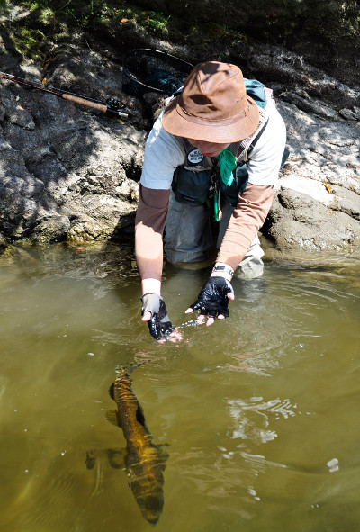

釣行日誌 ＮＺ編 「翡翠、黄金、そして銀塊」
沈木との闘い
2010/11/26(FRI)-3
遠浅の入り江でポンポンと釣った僕たちは、再びボートに乗り込み、岸沿いに進んだ。木立が張り出して日陰になっており、水際が岩盤になっているポイントで、鰐部さんが良型を掛けた。ロッドが大きく曲がり、なかなか魚影が見えない。一進一退の攻防が続いた後、ようやく疲れた鱒が上がってきた。すかさずディーン君がランディングする。下顎のしゃくれた大物であった。記念写真を撮った後、鱒を湖に戻すと、ゆっくりと鰐部さんの両手を離れて水中へと消えていった。

ふと湖岸を見ると、遙かかなたを列車が走って行く。この湖に沿って、トランツアルパイン鉄道のレールが走っているのだ。鰐部さんは明日、あの列車に乗ってクライストチャーチに戻る予定になっている。
今度は僕の番になったので、ロッドを構えてじっと水面を凝視する。ディーン君の力強いオール捌きでボートは静かに湖面を滑ってゆく。と、彼が水面を指差す。鱒だ。
「早く早く！」
ディーン君にせかされながら、大急ぎでできるだけフォルスキャストを少なくして、鱒が移動してしまわないうちにフライを打ち込む。少し沈ませてリトリーブ。ガツン。しっかり合わせてファイトが始まる。今度の１尾は、なかなかの大物らしく、すんなりとは上がって来ない。これは大事に行かないと、などと思っていると、視界の左の方に黒い影が見えた。沈木である。
「あ！ こりゃいかん！」
と思った次の瞬間、賢い鱒は一目散に沈木の向こうへ逃げ込んでしまった。ぐねぐねとした捻転の手応えは伝わってくるが、リーダーが絡まってしまったらしく、ラインを巻き取ることができない。しまったぁ！と思っているうちに鱒の手応えは無くなってしまった。
「ああ～っ！ 外されたぁ！」
「こんなこともあるさ！」
ディーン君の慰めの言葉をもらい、気を取り直す。どうやってもリーダーが外れそうにないので、ラインを持って強く引っ張り切ってしまう。リーダーを結び治してフライを新品に交換し、仕切り直しである。
少し進むと、またディーン君が１尾見つけた。
「ゴウ！ 早くして！ ちょっとロッドを貸してみろ！」
あれれと思うまもなくディーン君は僕の手からロッドを奪い取り、ピュッピュッとフォルスキャストをしてフライを打ち込んだ。鱒は即座にフライに襲いかかり、ロッドがしなる。
「これでいいよ。はい、ロッド」
またしてもディーン君に釣ってもらってしまった。まるで子供みたいだなぁと恥ずかしくなり、ロッドを受取り、鰐部さんにはにかみ笑いを見せながらファイトする。ランディングした後で、ディーン君が、
「１尾は１尾」
と言って笑った。
釣行日誌ＮＺ編 目次へ
サイトマップ
ホームへ
お問い合わせ